Selected website work.
Brand, structure, flows and design for companies with a lot of products and a lot of pages. Four sites, each shown at the size it was designed at. Click any screen to see the whole page.
Gen Digital · in progress
The blog is already built as a system
One post type, three categories, seven page types from three templates and one component library.
We set it up that way on purpose. The card, the listing row and the article template already carry what the rest of gendigital.com needs. Threat research leads the structure, and the family of brands appears once, in the brand strip, rather than as separate sections.
Structure is locked and with Ben's team for the build. The visual direction shown here was well received and is still moving: the same components were tried in four palettes before anyone chose one.
- Information architecture
- Templates and component library
- Visual design
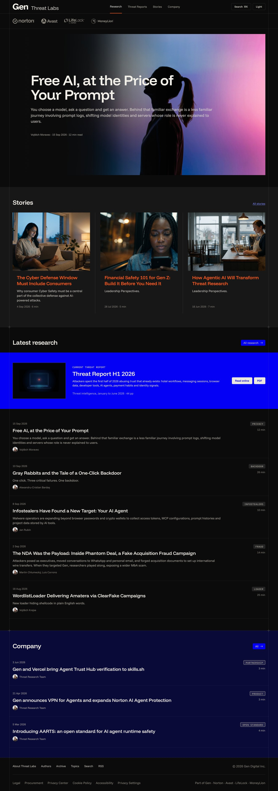
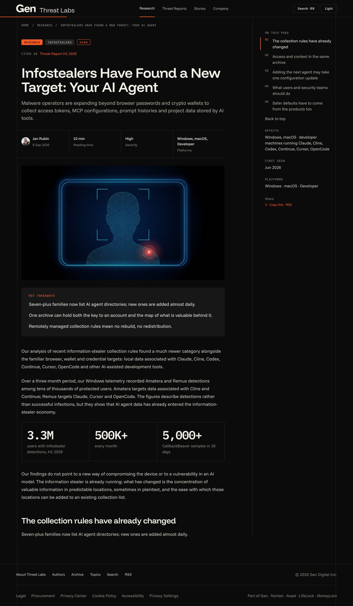
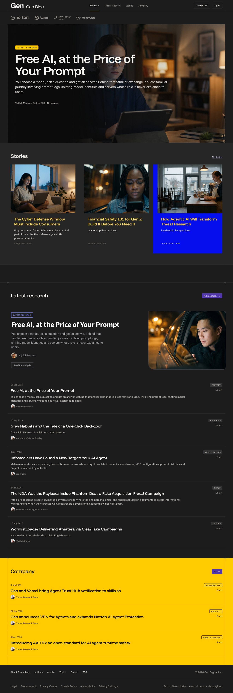
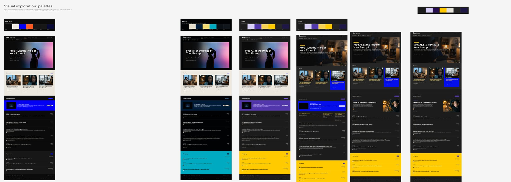
Same components, four palettes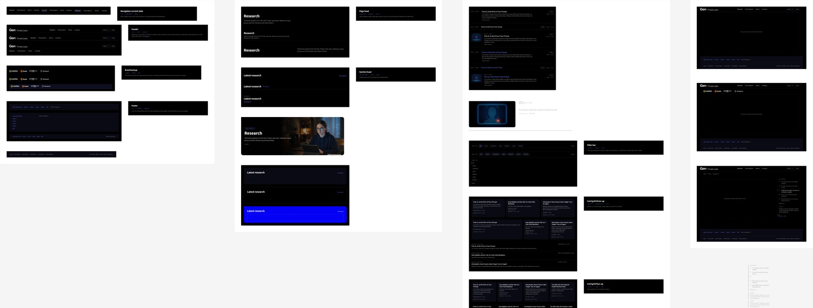
The parts every page is built fromQorvo · launched 2026
The whole site, from structure to pixels
Twelve product categories, seven solution areas, a design hub and a logged-in portal, all on one system.
Qorvo makes radio and power chips for phones, cars, defense and infrastructure. The site had grown by expansion for years. Categories overlapped, the same product sat in several places, and customers could not find what they came for.
We interviewed sales, engineering and support, rebuilt the information architecture as a tree with cross-links, then designed every template: Solutions, Products, product detail, search, Design Hub, About and MyQorvo. Qorvo's own team built it from our files, reviewed weekly until launch.
- Information architecture
- Flows and templates
- Search and parametric filtering
- MyQorvo portal
- Visual design
Structure built to hold five to seven years of new product lines without a rebuild.
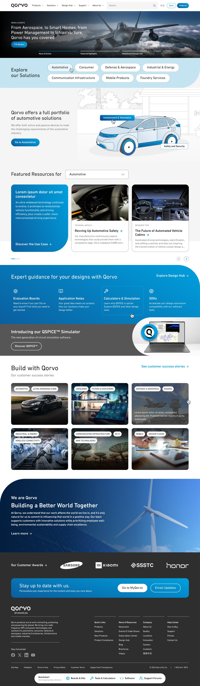
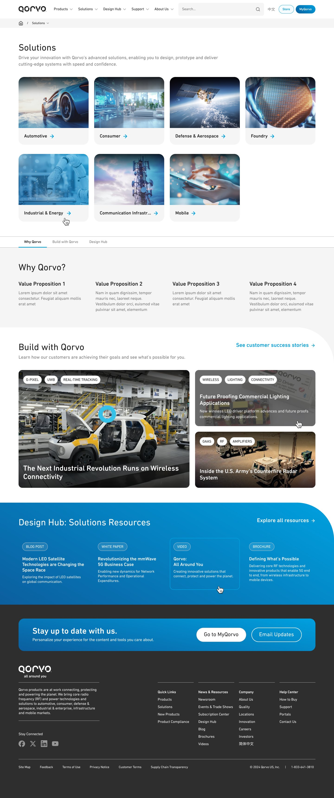
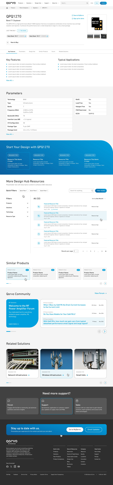
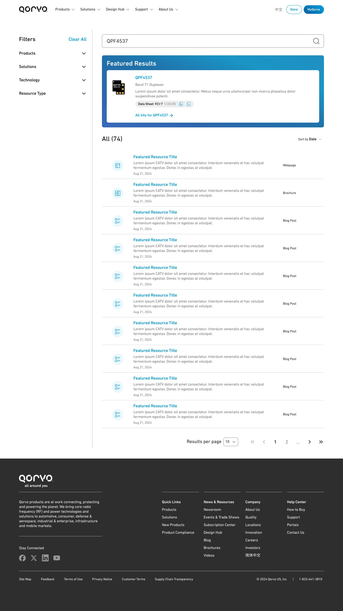
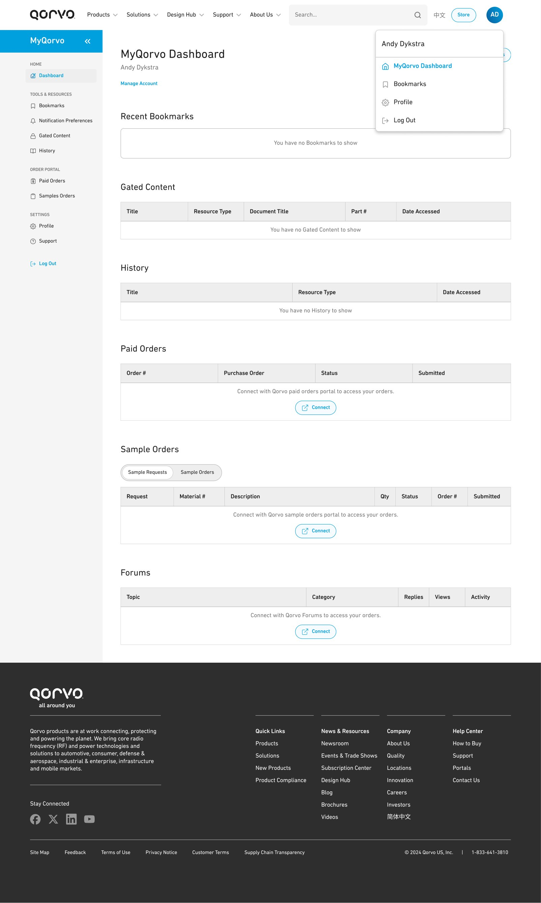
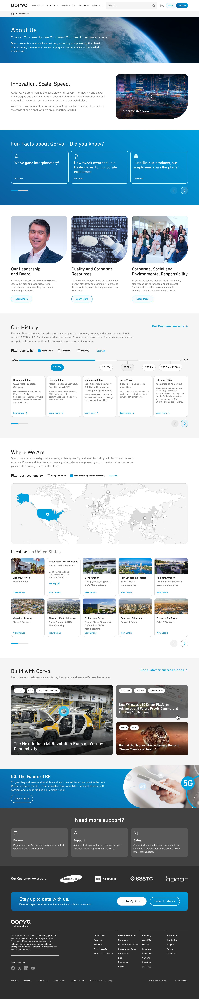
Binarly · cybersecurity
Redefining firmware and supply chain security
A security company has to look like it knows. Its readers are security engineers and the people who buy for them.
Binarly finds vulnerabilities in firmware and software supply chains for customers like Cisco and Dell. We redesigned binarly.io end to end: the brand expression, the page system, advisories and research, newsletters, and an illustration language for a product you cannot photograph.
The same system now runs the sales deck and the product itself, which we are designing next.
- Research
- UX and UI design
- Visual design and illustration
- Content system
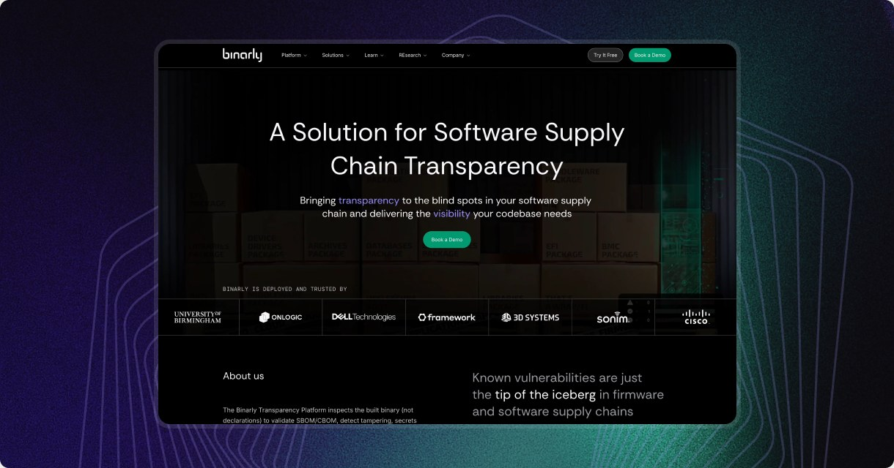
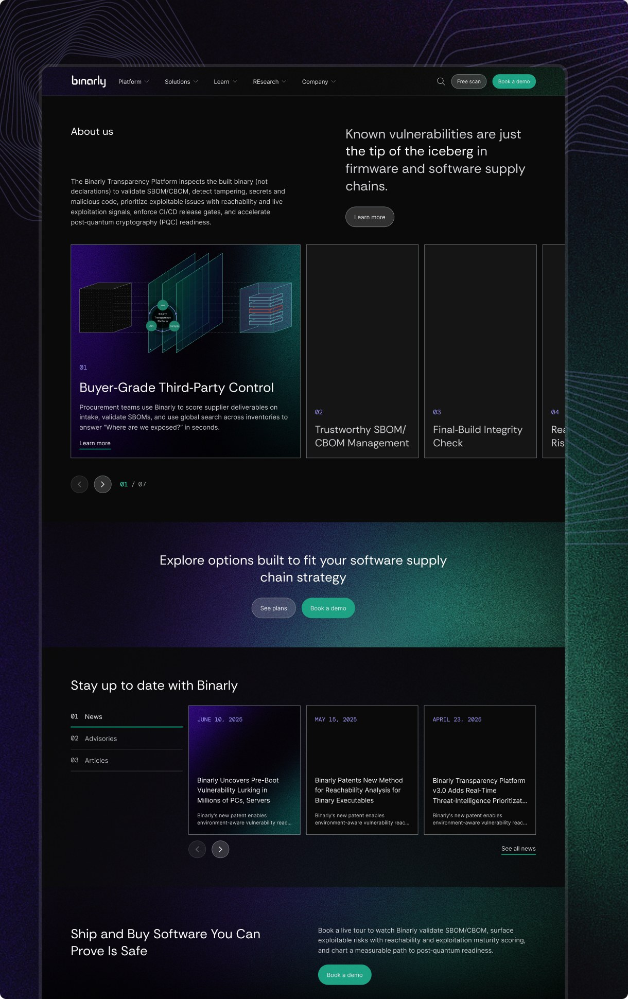
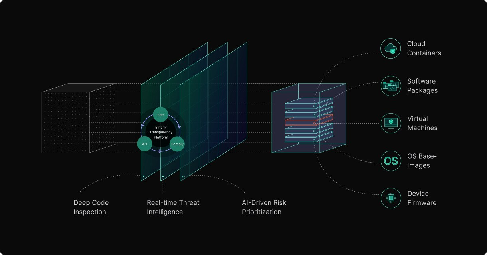
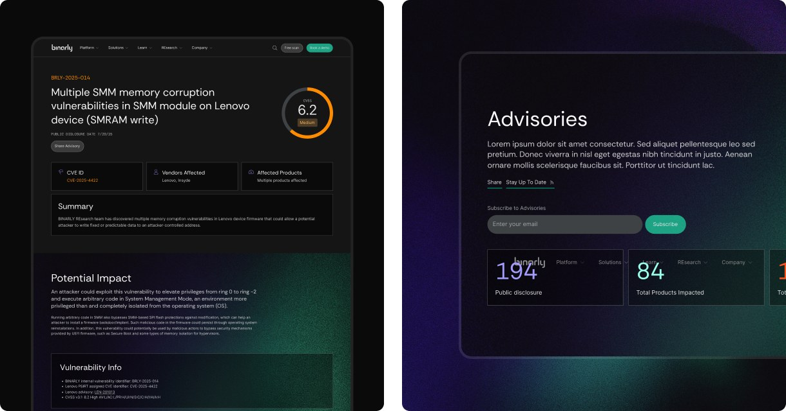
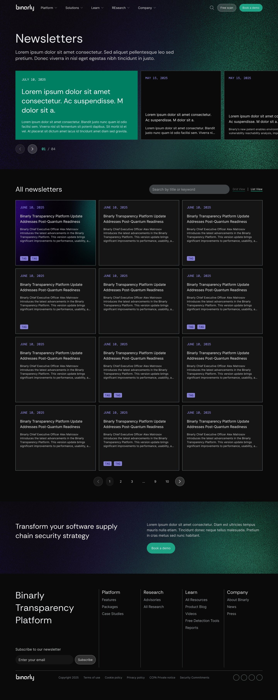
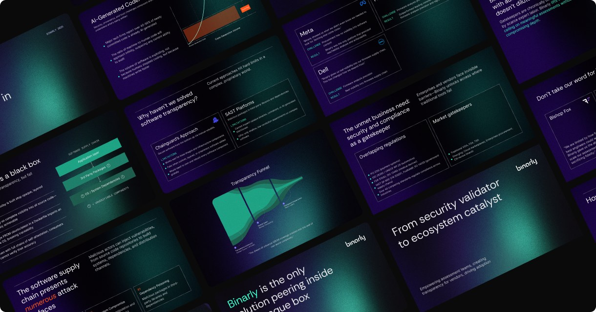
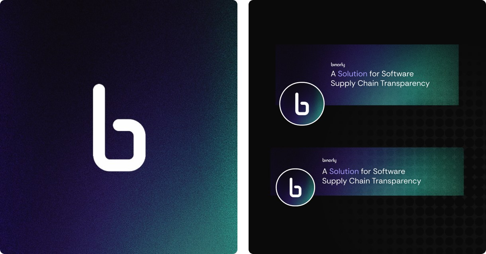
World Bank · Climate Warehouse
A platform for governments to run carbon markets
Ministries, corporate partners and the public walk through one front door.
The World Bank needed a public platform for Article 6 carbon market work under the Paris Agreement. What existed was static and read like a government document. We gave it a new structure, a brand presence, a custom CMS and blockchain-backed tracking of carbon credits, on its own domain.
Each program gets the same page: a color-coded accordion opens one section at a time, so a long policy page reads in minutes. The About page explains four work streams, the team, donors and partners without a wall of text.
- Information architecture
- Visual and UX/UI design
- Custom CMS
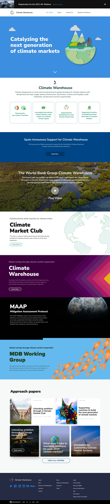
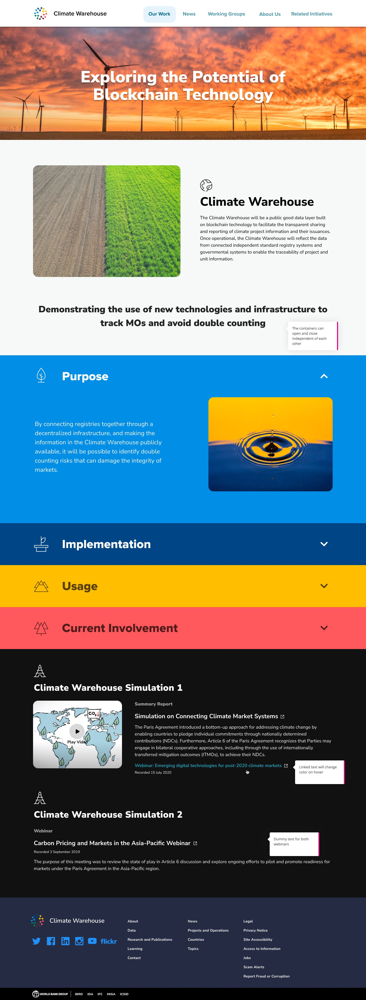
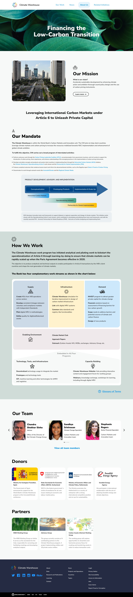
Large systems for companies with many brands and teams
Atlassian
Mercury, a design system used across product teams that had each been doing their own thing.
Vianai
Product design system and the analytics product Mastercard now uses for fraud detection.
Macy's and Bloomingdale's
Consumer experiences at retail scale, mobile and in store, for two brands under one company.
Partnered with Google since 2021 on trust, safety and compliance tooling, and on Gemini work.
Also Samsung, Winnebago, Sharp/NEC, Thomson Reuters, Ericsson, Cisco, Vodafone and Zoom.
What we would do with the whole site
- One structure for many brandsGen carries several brands and the site reads like that history. A structure that lets a brand sit in more than one place, and one component system every section runs on. We did this for Qorvo this year.
- Threat research leadsIt is the strongest thing Gen publishes. It should lead the site the way it leads the blog we are designing now.
- Design and build side by sideStructure first, then templates locked and handed over as they are approved, the way we already work with Alicia and Ben.
You'll love working with us.
chris@comediadesign.com
comediadesign.com
San Francisco